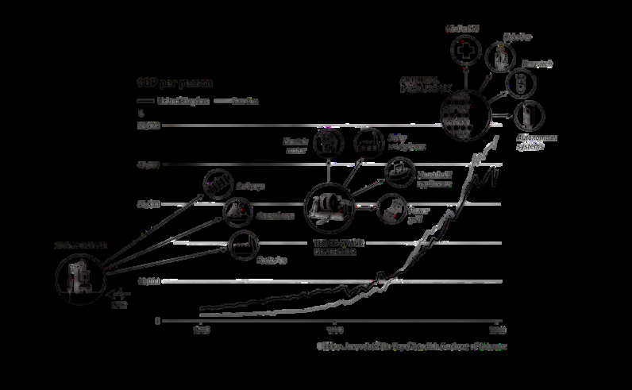
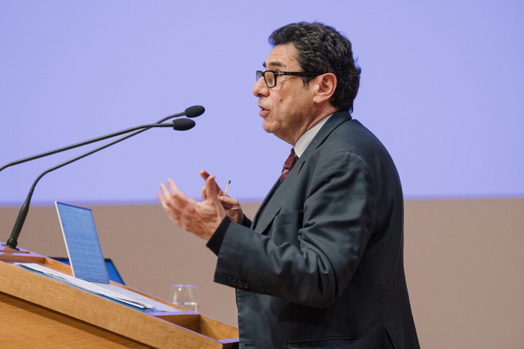
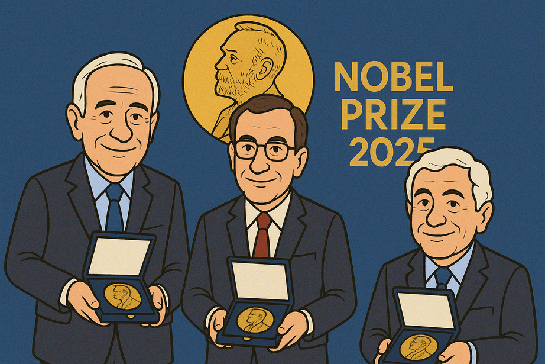

What are the essentials of economic growth? Economists have debated for centuries whether the source of prosperity lies in capital, institutions, or technology. The 2025 Nobel Prize in Economics tries to provide an answer to this question: technological progress is at the heart of sustainable growth. In its decision announced on October 12, the Nobel Committee honored Joel Mokyr, Philippe Aghion, and Peter Howitt for their contributions to understanding how ideas, innovations, and knowledge transform economies. Joel Mokyr from Northwestern University received half of the prize for "defining the preconditions for sustainable growth through technological progress," while Philippe Aghion from the Collège de France and Peter Howitt from Brown University shared the other half for their "theory of sustainable growth through creative destruction."
However, behind these works lies the intellectual legacy of Joseph Schumpeter, the thinker who defined capitalism as a process of "creative destruction." The influence of Schumpeter's ideas is clearly felt in both Mokyr's historical analyses and Aghion-Howitt's mathematical models. Mokyr's recognition as an economic historian and the frequent awarding of Nobel Prizes to work in this field in recent years indicate that economic history is experiencing a new golden age on the Nobel stage. So why were these people deemed worthy of the Nobel Prize? What did they discover, and what did they teach us?
Technological creativity can be a free lunch, allowing output to reach points on the production possibility frontier previously thought impossible. — Joel Mokyr
Technological Creativity and Economic Progress: Joel Mokyr's "The Lever of Riches"
Joel Mokyr's main thesis is presented in his 1990 book, The Lever of Riches: Technological Creativity and Economic Progress. This book is also his most cited work. He has written many other books that build on this thesis and further develop his theory. Another notable work is The Gifts of Athena: Historical Origins of the Knowledge Economy. Since we want to focus on the main thesis that led to his Nobel Prize, this article will only discuss the findings in The Lever of Riches.
It would not be wrong to say that Mokyr is working on a topic like that of Daron Acemoğlu, who made our country proud by winning the Nobel Prize last year. Daron Acemoğlu was conducting research on why some countries are richer than others, and his conclusion was that institutions are formed differently in each country and lead to different outcomes. You can read more about this topic in the first issue of ERUMAG. Mokyr is essentially doing the same thing. According to Mokyr, the wealth gap between countries stems primarily from differences in technological development. If you have better technology, you are more likely to be wealthy. However, this raises several questions: why and how does technology make some countries wealthier, and why do some countries have more advanced technologies than others?
Mokyr challenges the frequently cited "there is no such thing as a free lunch" statement in classical economics. On the contrary, he argues that technological creativity can be a free lunch. If we can achieve the same output by spending less than the effort and cost required to produce it, then that is a free lunch. In terms that those who have taken an introductory economics course will better understand, technological development allows output to remain outside the production possibility frontier. This point, which would normally be impossible to reach with the available resources, has become achievable with the same resources thanks to technological development. Mokyr characterized this as a free lunch and criticized one of the most general assumptions of classical economics.
According to Mokyr, the best example of this is seen in the Schumpeterian growth model. This type of growth refers to an increase in efficiency through the application of knowledge to the production process in any way; this increase results either in the production of a certain output with fewer resources (i.e., lower costs) or in the production of better or completely new products. Furthermore, much of this growth stems from the deployment of pre-existing knowledge rather than the production of new knowledge. For Schumpeterian growth to continue, there must be complementarity between invention (new ideas) and innovation (application), and societies must be both inventive and innovative.
Aspirin is cited by Mokyr as a classic example of a "free lunch" where large welfare gains are achieved at low cost. Aspirin was discovered in 1899 by Felix Hoffman (at Bayer). As an effective drug with no serious side effects and inexpensive to produce, it quickly became universally used. In other words, it was a product that did not require significant resources to produce but, thanks to the processing of knowledge, made a huge difference in human history.
Joel Mokyr divides inventions into two fundamental categories to explain the irregular and discontinuous nature of technological progress: macroinventions and microinventions. Macroinventions are radical discoveries that represent a completely new idea with no clear precedent, almost as if created "out of nothing" (ab nihilo). Examples include the mechanical clock, the printing press, or the gravity-powered clock. These inventions often resist explanation in purely economic terms because they typically emerge as a result of genius, luck, or chance. Microinventions, on the other hand, are small, incremental steps that improve, adapt, and simplify existing techniques already in use (reducing cost, improving function, increasing durability, etc.). Micro-inventions are far more numerous, and while most increase efficiency, they are more easily understood in terms of standard economic concepts (responding to prices and incentives). Mokyr argues that these two types of innovation are complementary and that, in the long term, radical innovations (macro-innovations) must be continuously developed (microinnovations) to sustain technological creativity; without macro-innovations, continuous improvements encounter diminishing returns and progress eventually stalls.

Mokyr concludes that the biggest factor limiting technological progress is social forces that resist new ideas. Mokyr points out that resistance to technological progress comes from groups (monopolies, guilds, unions, and reactionary institutions) that possess capital specific to old technology (physical or human) and believe that change will reduce their prosperity. He argues that the basis of the West's success lies in exceptional circumstances where the normal social tendency for forces opposing technological change to be stronger than those supporting it can be overcome. He also explains that technological progress is not generally Pareto superior (improvement for everyone affected), that there are losers in this process, and that it is usually easier for these losers to organize to stop change.
From Mokyr's Historical Theory to Aghion-Howitt's Mathematical Model
Mokyr put forward a historical thesis, but economics also draws on mathematical models. This is precisely where Aghion and Howitt come in. Aghion and Howitt actually indirectly complement Mokyr's work. While Mokyr approaches the impact of technological progress on growth from a more historical and verbal perspective, Aghion and Howitt succeeded in constructing a mathematical model of this phenomenon. The paper in which they announced this model, and which received the most citations, is "A Model of Growth Through Creative Destruction."
Aghion and Howitt's 1990 article is a theoretical model that places Schumpeter's idea of "creative destruction" at the center of economic growth. Schumpeter argues that the progress of capitalism involves a continuous cycle of renewal and destruction. As new ideas and technologies emerge, old ones lose their validity. This is both the source of economic development and the cause of instability. Aghion and Howitt take this idea and transform it into a mathematical model. According to them, a large part of economic growth stems not from capital accumulation but from technological innovation. Therefore, growth should be explained not by random "technology shocks" coming from outside but by the internal dynamics of the economy, namely people's decisions to innovate.

The model is based on the assumption that there are two types of activity in the economy. Individuals either work in production or engage in research and development to create new technologies. When research results in a new invention, production becomes more efficient, but this innovation renders old technologies obsolete. For example, digital cameras have replaced film cameras, and smartphones have replaced push-button phones. While every innovation brings gains, it also causes losses. The person or company that makes the innovation enjoys a monopoly for a short time and earns high profits, but this situation is not permanent. This is because the next innovation will also eliminate this company from competition.
Mathematically, the model explains this process through a type of probability mechanism. The emergence of innovations is random but depends on the amount of labor allocated to research. At any given moment, there is a probability that a new discovery will occur, and this probability is directly proportional to the labor allocated to research in the economy. This process is defined as the "Poisson process." In other words, more research creates a higher probability of innovation, but it is impossible to know exactly when innovation will occur. In the real world, this is similar to R&D activities carried out in laboratories. Scientists may work for years, but they cannot predict when a discovery will occur.
Every new invention increases the efficiency of the production tools used in the economy. Production costs decrease, and output increases. In the model, this situation is represented by the cost parameter in the production function decreasing by a certain rate with each innovation. Technological accumulation arises from past accumulation but also renders it obsolete. This is the process of "creative destruction" in its fullest sense.
The innovative company becomes the sole owner of the new technology through a patent and gains a short-term monopoly. This provides it with high profits. However, these profits are temporary, because the next innovation will render its technology obsolete. The more research is conducted in the economy, the shorter the lifespan of existing technologies becomes. In other words, innovation is a self-threatening process.
Creative Destruction and Growth Equilibrium
Equilibrium, or "balanced growth equilibrium," occurs when the labor allocated to production and research in the economy reaches a fixed ratio. In this case, the growth rate also stabilizes. According to the model, economic growth depends on two things: how often innovations occur and how powerful each innovation is. Therefore, growth is not a miraculous external factor, but an internal series of decisions.
This process is also random. Since the timing of innovations is unknown in advance, the economy's production level also increases in leaps and bounds. Authors describe this situation as "a random walk of log GNP." In other words, production rises in the long term but carries uncertainty in the short term. In the real world, we can see this structure in the leaps created by the internet revolution in the 1990s, smartphones in the 2010s, or artificial intelligence in the 2020s. Every major innovation creates a random but lasting growth effect in the economy.
Aghion and Howitt also discuss the effect of the magnitude of innovations on growth. If innovations are small, growth is slow. However, if innovations are very large, people become more cautious in their decisions about the future, because major technological leaps disrupt consumption and investment decisions. In this case, major innovations may reduce the desire for research. Thus, paradoxically, more revolutionary innovations can slow down the pace of growth.
The model also illustrates the difference between the private sector and social welfare. For a private firm, the value of an innovation depends on the duration of the profit it generates. However, the same innovation is more valuable from a societal perspective because it increases the productivity of the entire economy. This difference explains why private economies sometimes innovate excessively and sometimes innovate too little. If the "business-stealing" effect prevails, meaning companies engage in excessive innovation to steal each other's profits, there will be excessive growth. If knowledge externalities prevail, meaning the benefits of innovation spread to society and bring little gain to the individual, there will be little research.

What's Next?
In summary, both studies indicate that wealth and economic growth are possible through the processing of information and the discovery of new technologies. However, they also reveal that this process can have negative consequences, as new inventions can disrupt and eliminate older ones. This situation can also create significant resistance to innovation among the majority. For companies, innovation can also be an end in itself due to the profit derived from monopolizing new technology.
At the very moment these words are being written, the world stands on the brink of a new creative destruction. This creative destruction is none other than artificial intelligence. AI has the potential to grow our economies and increase our social welfare through the efficiency it provides. However, it also has the power to create new monopolies and, most importantly, to render existing technology, knowledge, and experience obsolete. We can say that this Nobel Prize awarded at this sharp turning point in history also serves as a guide for us regarding the future.
Selected references
- Mokyr, Joel. (1990). The Lever of Riches: Technological Creativity and Economic Progress. Oxford University Press.
- Aghion, Philippe, & Howitt, Peter. (1990). "A Model of Growth Through Creative Destruction." NBER Working Paper No. 3223. National Bureau of Economic Research.
- Press release. (2025, October 19). NobelPrize.org. Nobel Prize Outreach.